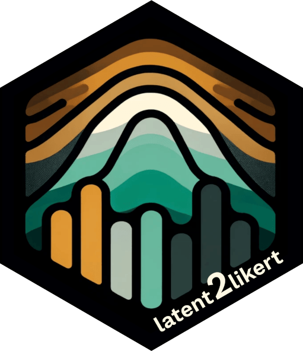

latent2likert 
This package is designed to effectively simulate the discretization process inherent to Likert scales while avoiding excessive distortion. It converts continuous latent variables into ordinal categories to generate Likert scale item responses. It is particularly useful for accurately modeling and analyzing survey data that use Likert scales, especially when applying statistical techniques that require metric data.
Installation
The development version can be installed using devtools:
# install.packages("devtools")
#TODO: load the new package
#devtools::install_github("markolalovic/latent2likert")Features
- rLikert: Generates random responses to Likert scale questions based on the specified means and standard deviations of latent variables, with optional settings for skewness and correlations.
- estimate_parameters: Estimates latent parameters from existing survey data.
Dependency statement
To keep the package lightweight, latent2likert only imports mvtnorm, along with the standard R packages stats and graphics, which are typically included in R releases. An additional suggested dependency is the sn package, required only for generating random responses from correlated Likert items based on a multivariate skew normal distribution. The package prompts the user to install this dependency during interactive sessions if needed.
Contributions
Feel free to create issues for bugs or suggestions on the issues page. You can also make changes and submit a pull request. Contributions may include bug fixes, new features or documentation improvements.